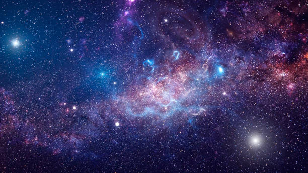

Apresentação

Sobre
O evento, intitulado “Semana do Conhecimento e Jornada se Iniciação Científica” está em sua oitava edição.
O evento terá a duração de três dias: nos dois primeiros toda a estrutura estará voltada à realização de palestras, mesas redondas e minicursos. Todos os participantes receberão certificados das atividades realizadas.
O terceiro dia será destinado à apresentação de trabalhos com exposição de banners. Os trabalhos com avaliação satisfatória serão publicados nos Anais do evento, na Revista Eletrônica da Instituição. Os melhores trabalhos serão premiados em cerimônia posterior nas categorias “Jovem Pesquisador”.
O evento deverá realizar-se nos dias 06 e 07 de novembro e tão logo seja possível, a divulgação será iniciada. As inscrições e normativas serão disponibilizadas em site próprio.